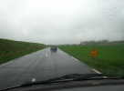
Les provisions faites, le fourgon bondé de tout ce qu'il faut pour tenir 10 jours, je prends la route le vendredi pour Berck par un grand beau temps. A 20 km des lieux de pêche, le ciel me paraît sombre là-bas ! Effectivement, j'arrive sous la flotte. Bon, Berck est tardif, cette année et ça devrait s'améliorer ; déjà, il ne fait pas froid et il ne neige pas, immense progrès...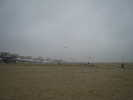
Samedi matin, il ne pleut plus, mais temps brumeux et petit vent. Mon oiseau-spiralier vole de justesse...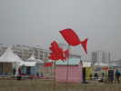
Au sol, Didier Ferment a conçu, et les Jardiniers du Vent réalisé, une série de poissons en bambous qu'ils disposeront tous les jours différemment.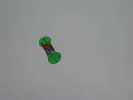
Loïk Lamalle est en l'air tôt comme d'habitude. Il a créé de nouvelles balises dont celle-ci qui ne passe pas inaperçue...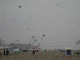
Mais petit à petit, le vent monte (ce sera comme ça presque tous les jours), et le nombre des cerfs-volants suit sans hésiter !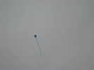
Loïk a aussi réalisé des Balises plus petites et plus toilées pour le vent léger et met tout en l'air...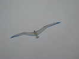
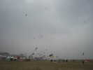
Le vent est quand même encore un peu hésitant, et le ciel ne veut pas se dégager : la brise de mer est faiblarde, et le ciel n'est pas trop coloré...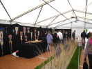
Un petit tour sur la promenade, on traverse la tente des artistes du cerf-volant, ornée de leurs réalisations ténues et originales...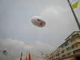
La Belgique, en tout cas la Wallonie, est présente et domine la fête !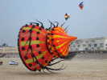
De Colours-in-Motion, Allemands comme leur nom ne l'indique pas, de magnifiques manches à air-bols très ouvragées, avec des tentacules quasi-animaux !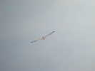
Le vent est encore monté, j'ai rangé Megoel et sorti l'Albatros (je n'arrête pas, aujourd'hui !), plus adapté au-dessus de Force 3...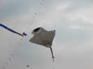
Là-bas, une raie Manta légèrement plus grande que la mienne et très réaliste, avec ses palpes de chaque côté de la bouche ! Cette année, la mode pour les raies est de laisser les pointes d'aile se relever, ce qui donne une souplesse animale, et augmente sans doute la stabilité...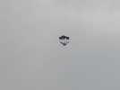
Inhabituelle, cette espèce de Roller avec une pointe avant réduite comme les Jessicas, avec sans doute les mêmes bénéfices, et une grande largeur pour sa longueur !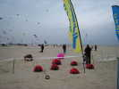
Michelle et Patrick l'Higuinen ont planté les bannières du CVCF et accroché la banderole sur la palissade. Ca fait un point de ralliement pour les membres, mais il y a aussi beaucoup de néophytes qui viennent demander un réglage pour les m... qu'ils ont achetées et qui ne veulent pas voler ! C'est souvent leur faute d'ailleurs, mais bien sûr, on ne leur a pas dit que le dièdre doit être mis vers le haut et pas vers le bas... Mais, des fois, on n'arrive même pas à faire voler de mauvais deux-lignes...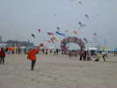
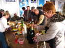
Au soir, les Jardiniers et quelques sympathisants ont organisé une pizza-partie dans la tente VIP. Chacun amène sa contribution au pot préparatoire, Patricia a une seule bouteille de bière, mais il faut presque être deux pour la porter !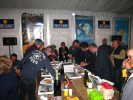
Les pizzas sont arrivées, enfin de sympathiques volontaires sont allés les chercher. On se jette dessus pour les découper, et il n'en restera rien !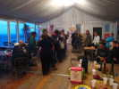
Après le dessert offert par Niekol, on répète la parade avec les poissons du lendemain, mais sans poissons !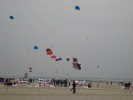
A terre ont été disposés les Saconneys pour l'ascension humaine (voir plus bas...). En vol, j'ai bien aimé ce phare gonflable aplati qui semble plutôt un jouet d'enfant issu d'une BD, ou une sucette...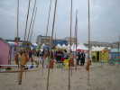
Dans les JdVs, Didier Ferment a replanté ses cordes vibrantes sur calebasses, et les enfants ne peuvent s'empêcher de tirer dessus, au lieu d'écouter la vibration du vent.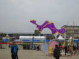
Un couple de japonais a sorti ses limaces de mer, de curieux cerfs-volants pas tendus, mais qui volent quand même....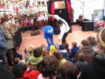
Sur la promenade, la tente des marionnettes en offre de nombreuses variétés, le montreur les manipule au milieu des enfants (ou dans le théâtre pour les classiques) !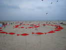
De haut, on voit mieux la forme de la spirale de poissons, qu'on perçoit mal d'en bas !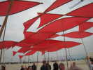
Nous avons aussi fait une parade dans le terrain de compétition, avec 35 porteurs et 35 poissons....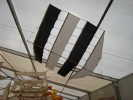
Sous un grand barnum, une exposition mixte de BDs (avec les dessinateurs en temps réel...) et de cerfs-volants anciens, allemands surtout... Mais Olivier Reymond a aussi exposé les siens, inspirés de BDs...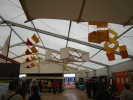
Boîtes Hargraves, Roloplans, toute la panoplie !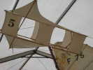
Celui-ci, avec ses petites ailes, doit être un porteur de grand vent !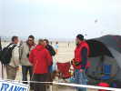
Du côté du CVCF, le point de ralliement fonctionne, on revoit même des anciens (aérophotographe) qui se réinscrivent au CVCF après 10 ans d'absence... On voit Jean-Daniel Chantelauze, Philippe Jullien, Michel Avril et Claude Dufresne (l'homme au chapeau), Gilles Poutoux et Catherine Renard avec des Jessicas, Damien Debril, Michel Van Reckem, José Wallois et Christian Bécot.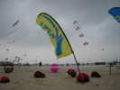
Le vent est maintenant monté à Force 4, la bannière du CVCF marque le coup ! Les ascensionnistes se réjouissent et commencent à lever le train : 1 Saconney-guide puis 4 en train rapproché.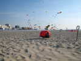
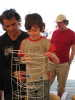
Les toboggans à billes de Joël Goupil ont toujours autant de succès sur les enfants extasiés...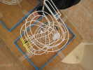
Si vous désirez en faire, je vous donne le plan, plus qu'à recopier !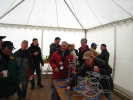
Bon, midi approche, on évacue les enfants, pas que ça à faire, l'apéritif attend ! Bien commode ce barnum avec des tables...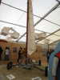
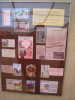
Philippe a exposé quelques-unes de ses cartes postales sur le cerf-volant...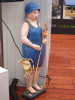
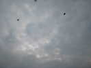
J'ai modifié un peu mon Spiralier pour qu'il supporte des vents un peu plus fort sans battre des ailes en crawl ! Du coup, je peux le monter en confiance tout au bout de mes 200 m de ligne...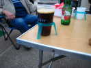
Au soir, retour au parc des camping-cars ! Une petite halte bien méritée après avoir traîné le sac de matériel dans le sable fin (y a pas assez de cabanons pour les cervolistes...). Des gens bien équipés pour ne pas renverser la bière m'accueillent...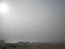
Malgré ses modifs, mon Spiralier reste performant par vent léger. Je finis par réussir à le monter, mais évidemment, avec le plafond bas, on ne voit plus que le fil. Mais moi, je sais qu'il est là !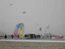
Le vent monte un peu plus et la brume se dilue. On peut distinguer, pas trop loin, un bol, mais qui ne tourne pas pour le moment.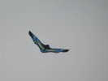
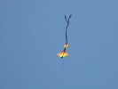
Dans le ciel, ce joli cerf-volant plat et coloré, très stable...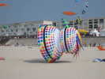
Les voisins allemands ont une autre manche sophistiquée et à tentacules... Pour le moment, elle rase un peu le sol mais se gonfle très bien.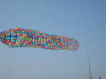
Ils ont aussi des manches sur des cannes, avec très peu de toile en fait, mais beaucoup de couture, évidemment. Contrairement à ce qu'on peut penser, elles se gonflent facilement !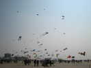
Le ciel s'est finalement dégagé, la brise de mer est arrivée, et il commence à y avoir pas mal de monde en l'air...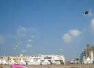
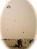
Cette carte postale d'ascension humaine va inspirer les démonstrateurs actuels...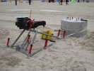
Le treuil a été mis en place, les 6 barres plantées dans le sol à la masse et le tout attaché à un énorme plot de béton !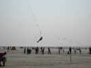
Pas de nacelle, mais un harnais moderne de travailleur à la corde. Bon, c'est parti, après un essai sur ultraléger, on s'attaque à plus lourd. Vous le reconnaissez, bien sûr ?